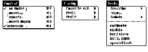

There's little that compares to diving headfirst toward the ground at 120 miles per
hour. I may have been going even faster when I last went skydiving. Tucking my arms
in tightly, with my head back and legs even, I heard a deafening roar from the wind as I
sped toward terminal velocity. "Terminal" would have been a good word for the
situation if it weren't for the advances that have been made in parachute technology.
Parachutes have come a long way since their debut, when they were billowy round
disks of silk sewn with simple cords stretching to a harness. They were greatly
improved when the square parachute was invented thirty years ago. The square
parachutes look like an airplane's wing, and they create lift in much the same way.
Until recently, however, square parachutes weren't improved upon much. Perhaps
their superiority over round parachutes left everyone satiated. That lack of progress
was unfortunate; if recent improvements -- like many-celled parachutes and
automatic activation devices -- had been pursued many years ago, skydiving would be
even safer today.
The moral from this is to question satisfaction, and that will be our mantra for this
column. In particular, I want you to question the performance gains you've seen by
moving to native PowerPC code. In this column we'll look at improved tools for
examining PowerPC code performance, and you'll see how such questioning can really
enlighten you.
The PowerPC processors can issue multiple instructions at once. You therefore may
think they'll tear through your code, executing many instructions per cycle. While
this is sometimes true, a number of hurdles keep the PowerPC processors from
completing even one instruction per cycle. These hurdles include instruction cache
misses, data cache misses, and processor pipeline stalls.
What may surprise you is how often the processor sits idle because of these hurdles. I
did some tests and found that while opening new windows in one popular application, a
Power Macintosh 8500's processor completed an average of only one instruction for
every two cycles. This is not very efficient, considering its PowerPC 604 processor
can complete up to four instructions per cycle.
Much of that inefficiency is from instruction and data cache misses. As PowerPC
processors reach faster clock rates, these cache misses will have an increasing
impact. By minimizing cache misses we could realize a significant performance
improvement.
Simply recompiling your 680x0 code to native PowerPC code doesn't typically
generate efficient code. Many designs and data structures for the 680x0 architecture
work very poorly when ported to PowerPC code. When you port native, you should
carefully examine your code. Tuning for a cached RISC architecture is very different
than for the 680x0 family. Here are some important things to consider:
Until recently you couldn't measure cache misses unless you had a logic analyzer or
other expensive hardware. The PowerPC 604 processor, however, includes an
extremely useful performance measurement feature: two special registers (plus a
register to control them) that can count most events that occur in the processor. Each
of these registers can count about 20 events, and there are five basic events that both
registers can count.
Here are just a few examples of what you can count with these registers: integer
instructions that have completed; mispredicted branch instructions; data cache
misses; and floating-point instructions that have been issued.
To use the performance profiling that the PowerPC 604 processor provides, you'll
need to have one of the newer Macintosh models that include this processor, such as the
Power Macintosh 9500 or 8500. This will cost less than a logic analyzer yet allow
you to get detailed performance profiles.
Although these registers will show your software's performance only on a 604-based
Power Macintosh, your software's cache usage and efficiency should be similar on
other PowerPC processors. Use the 604's special abilities to profile your code and
you'll benefit on all Power Macintosh models.
For more accurate performance measurements, you may want to use the DR Emulator
control panel, which is provided on this issue's CD. With this control panel you can
turn off the dynamic recompilation feature of the new emulator; this feaure, which is
described in the Balance of Power column in Issue 23, can affect the performance of
your tests over time.
Also provided on the CD is the POWER Emulator control panel. This
control panel lets you turn off the Mac OS support for RS/6000 POWER
instructions and thus check for these instructions in your code (they'll cause a
crash).*
To use the new 604 performance registers, you don't need to program in PowerPC
assembly language. On this issue's CD we've included a prototype application called
4PM. This tool, which was developed by engineer Tom Adams in Apple's Performance
Evaluation Group, uses the PowerPC 604-specific registers to provide various types
of performance data.
4PM is very simple to use. It presents three key menus: Control, Config, and Tests, as
shown in Figure 1. You use these menus to select the type of performance measurement
and an application you'd like to run the tests on. The application you're testing is
launched by 4PM, and you can gather data either continuously or, using a "hot key,"
exactly when you want.

Figure 1. 4PM menus
Once a test completes, 4PM fills a window with the results -- a tabular summary with
a different test run on each line. The Save command in the File menu will write the
results to a file of type 'TEXT'.
The Control menu. Use the Launch command in this menu to select an application
and run it, gathering the test data specified with the Config or Tests menu. The default
configuration will measure cycles and instructions completed between when the
application launches and when it quits. The Launch Again command simply relaunches
the last application you tested.
Check Use Hotkey if you'd like to control exactly when data is gathered. With this
option, you start and stop collecting data by holding down the Command key while
pressing the Power key. (This key combination is the same way to force entry to
MacsBug, which you'll be unable to do during the tests.)
The Repeats command is just a shortcut that's handy if you're repeating a test multiple
times. If you specify a repeat value with this command, your test application will be
relaunched that many times after you quit it.
The Intervals command allows you to collect data points at regular intervals; a dialog
box offers the choices 10 milliseconds, 100 milliseconds, 1 second, or Other.
Normally just a total is collected, but by specifying an interval time you'll instead
receive a spreadsheet of timings. This will show what your code's performance was as
the test progressed.
The Config menu. The commands in the Config menu allow you to tailor the test data
by specifying exactly which events each register will count. The Count Select command
lets you specify the machine states to collect data in; set this to "User Only" since
you'll be tuning application code.
The Tests menu. The commands in the Tests menu are for generating typical
reports. Use the calibrate command to count the five basic events that are common to
both 604 performance registers, including cycles and instructions completed; with
this test selected, the Launch command will run your application five times,
successively counting each of these events. You can use one of the remaining tests to
collect more specific measurements. The caches, load/store, execution units, and
special instructions tests each generate a report for the corresponding aspect of 604
performance. The Describe command displays a window describing which events are
counted in the selected test. Use the New command to create your own tests. These new
tests are automatically saved; you can use the Delete command to remove any that
you've added.
If you want finer results, you should read and write to the 604 performance registers
directly. This requires writing in PowerPC assembly language, but it allows you
complete control over what data you'll collect for your time-critical code.
You'll be accessing three new special-purpose registers: MMCR0, PMC1, and PMC2.
MMCR0 controls which events will be recorded and when exactly to record. The
performance monitor counter registers, PMC1 and PMC2, are the registers in which
you'll read the results. I'll give a brief summary of how to use these registers, but
you'll need to read Chapter 9 of the PowerPC 604 RISC Microprocessor User's Manual
for details.
MMCR0 is a 32-bit register that specifies all the options for performance
measurement. Most of these options aren't important to your application profiling, and
you should at first leave the high 19 bits of MMCR0 set to 0. The low 13 bits,
however, specify which events you want counted in PMC1 and PMC2. Bits 19 through
25 select PMC1, and bits 26 through 31 select PMC2. See Chapter 9 of the 604 user's
manual to learn which specific bits to set.
Here's an example of how to measure data cache misses per instruction:
.eq PMC1_InstructionsCompleted 2 << 6
.eq PMC2_DataCacheMisses 6
.eq MMCR0_StopAllRecording $80000000
li r0, MMCR0_StopAllRecording
mtspr MMCR0, r0 ; stop all recording
li r0, 0
mtspr PMC1, r0 ; zero PMC1
mtspr PMC2, r0 ; zero PMC2
li r0, PMC1_InstructionsCompleted +
PMC2_DataCacheMisses
mtspr MMCR0, r0 ; start recording
Notice that we load MMCR0 with only the most significant bit set to turn off all
recording. This holds PMC1 and PMC2 at their current values and allows us to also
zero PMC1 and PMC2 before we start recording. When you're done measuring, follow
with this code:
li r0, MMCR0_StopAllRecording
mtspr MMCR0, r0 ; stop all recording
mfspr PMC1, r3 ; r3 is number of
; instructions completed
mfspr PMC2, r4 ; r4 is data cache misses
Notice again that we turn off recording before reading the results. Otherwise the very
act of reading the registers would affect the results; it will slow your code slightly,
since the mtspr and mfspr instructions take multiple cycles to complete.
Don't record over very long periods of time, because the PMC1 and PMC2 registers can
overflow. To measure over long periods, you should periodically read from the
registers, add the result to a 64-bit number in memory, and clear the registers to
prevent this overflow.
Don't ship any products that rely on these performance registers. They're supported
only in the current 604 processor, and they're not part of the PowerPC architecture
specification.
The moral is the same as for my tale of the square parachutes: question satisfaction.
Don't become complacent about the performance of your new native PowerPC
applications. The profiling tools described here should help you more accurately
measure and identify bottlenecks in your PowerPC code. Use that information to tune
-- especially paying attention to memory usage -- and you'll be surprised how much
faster your product will run. Macintosh users consistently hunger for faster
computers and more responsive software; spend some serious time tuning, and they'll
thank you for it.
DAVE EVANS likes to go skydiving when he can get away from his job gluing together
the Mac OS software at Apple. He has gone a few times now, but he'll always cherish the
memory of his first jump. Friends on the ground that day claim to have clearly heard
his scream, although he was nearly a mile above them when he left the plane. On his
second leap, if he hadn't opened the chute while upside down and then watched it deploy
through his legs, he might have noticed more of the surrounding countryside.
Thanks to Tom Adams, Geoff Chatterton, Mike Crawford, and Dave Lyons for reviewing
this column.